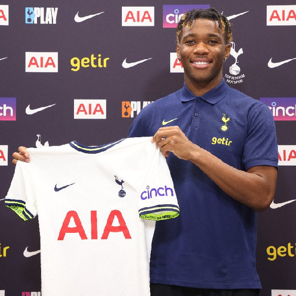
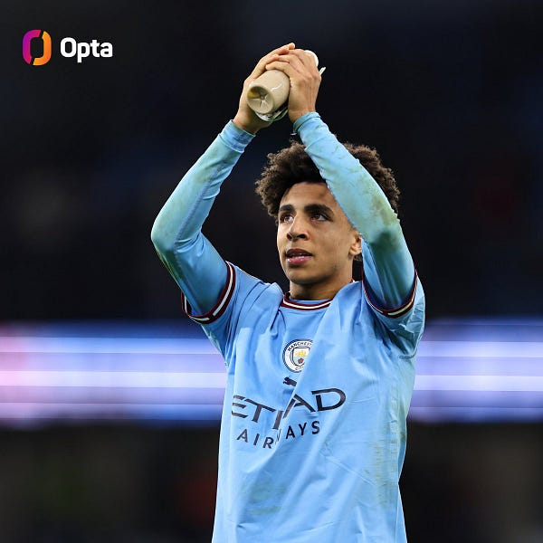
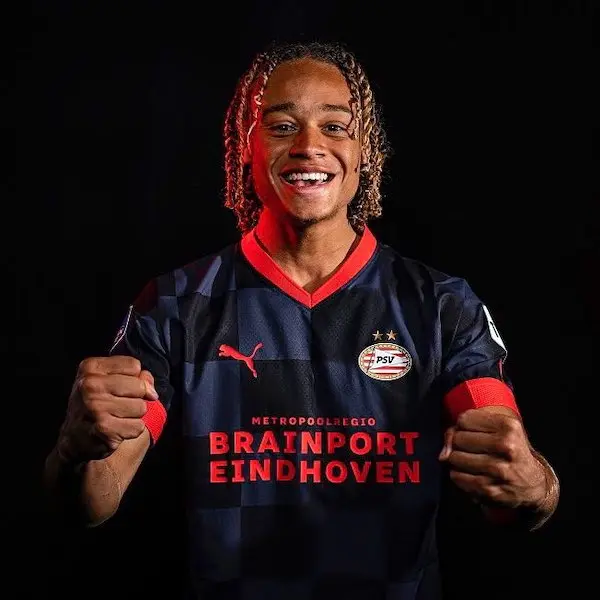

<!DOCTYPE html>
<html lang="pl-PL>
<head>

<meta http-equiv="Content-type" content="text/html; charset=UTF-8" />
<meta http-equiv="Content-Language" content="pl" />
<meta name="Author" content="Aleksander Żuk" />
<title>Piłka nożna okiem amatora</title>

<style>

#menu {
background-color:black;
color: white;
padding: 10px;
font-size: 200%;
}
#menu table{
width:100%;
}
#menu th{
padding: 15px;
background-color:darkred;
}
#menu a {
text-decoration: none;
color:white;
}
h1 { 
color: black;

font-size: 500%;
text-align:center;
padding-top: 20px;
}
p{
font-size: 300%;
color: black;
}
p.clear {
clear:both;
}
table{
width: 80%; 
margin: auto; 
}
</style>

<body style="background-color:lightgray;">

<div id = menu>
<table>
<tr>
<th> <a href ="gotowa strona lab1.html"> Menu </th>
<th> <a href ="Na2Nozke.html"> Na2Nóżkę </th>
<th> <a href ="PremierLeague.html"> Premier League </th>
<th> <a href ="MlodePerelki.html"> Mlode Perelki </th>
<th> <a href ="oMnie.html"> O mnie </th>
<th> <a href ="kontakt.html"> Kontakt </th>
</tr>
</table>
</div>

<h1> Młode perełki </h1>

<hr>

<p style="text-align:justify; padding:2px;"><b>Destiny Udogie</b> to lewy obrońca włoskiego pochodzenia, aktualnie zawodnik Tottenhamu Hotspur. Zawodnik ten gra na lewej obronie i znany jest ze swojej ruchliwości
i wielkiego zaangażowania w grę. W poprzendim sezonie w barwach Udinese w Serie A był niejednokrotnie nominowany do nagrody zawodnika miesiąca całej ligi. Obecnie pod australijskim trenerem Ange'm Postecoglou bardzo aktywnie uczestniczy w akcjach ofensywnych grając charakterystycznie dla 
obrońcy w systemie Australijczyka bardzo blisko środka boiska. Ledwo wszedł do Premier League a już stał się kluczową postacią lidera ligi.</p>
<p class="clear"> <hr> </p>

<p style="text-align:justify; padding:2px;"><b>Rico Lewis</b> to radosny obiekt melodii przyszłości futbolu prowadzony obecnie przez Pepa Guardiole w Manchesterze City. Rok temu po raz pierwszy zagrał w seniorskiej drużynie.
Stało się to szczególnie imponujące, gdyż trener mistrza Anglii decydując się na zmiane ustawienia na eksperymentalne 3-5-2 zaufał młodemu Anglikowi kosztem doświadczonego członka starej gwardii Kyla Walkera. Powiedzieć, że sobie poradził to jak nie powiedzieć nic. Momentalnie zaczął zajmować okładki gazet.
</p>
<p class="clear"> <hr> </p>

<p style="text-align:justify; padding:2px;"><b>Xavi Simons</b>. Niegdyś największy talent wielkiej <span style="color:darkblue">La</span><span style="color:darkred"> Masii </span>, szkółki piłkarskiej Barcelony. W 2019 roku przeszedł do 
francuskiego zespołu Paris Saint Germain. W międzyczasie trafił na rok do Holandii, do zespołu PSV Eindhoven, w którym rozegrał fantastyczny sezon strzelając 19 bramek w 34 meczach na pozycji pomocnika ofensywnego. PSG miało szczęście, że zagwarantowało sobie opcje wykupu, z której oczywiście skorzystali. Obecnie
reprezentuje barwy niemieckiego RB Lipsk na wypożyczeniu.
</p>
<p class="clear"> <hr> </p>


</body>
</html>
